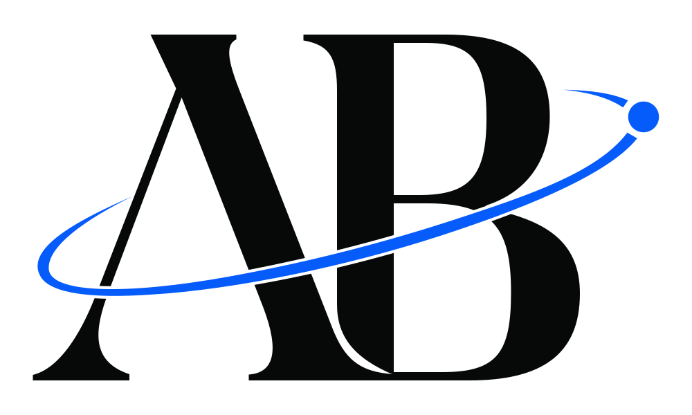

Arquivo canônicoSVG
Uma assinatura, várias escalas.
O monograma, a órbita e o ponto de foco formam uma composição única. As versões reduzidas preservam sua leitura.
Baixar a principal

Sistema de marcaKit de interfaceAB / Interface
Uma identidade que organiza a atenção. Controles claros, estados legíveis e uma assinatura que acompanha cada escala.
Mostruário de referência. As interações desta página funcionam localmente.
01 / Ação
Três hierarquias, quatro estados. Use Tab para conferir o foco real de cada controle.
As colunas de hover e foco fixam a aparência para comparação; o foco do teclado continua visível em todos os controles habilitados.
02 / Entrada
O rótulo identifica. A ajuda orienta. O erro explica como continuar.
Use entre 3 e 80 caracteres. O texto permanece neste navegador.
Digite um nome e valide para explorar os estados.
Use pelo menos 3 caracteres. Esta amostra exibe o estado de erro.
O controle indisponível mantém seu rótulo e sua informação de contexto.
Estado visível, mensagem explícita. O erro é comunicado por texto e por aria-invalid, além da cor.
03 / Contexto
Badges descrevem o estado. Cards agrupam uma ideia e seu próximo passo.
O monograma, a órbita e o ponto de foco formam uma composição única. As versões reduzidas preservam sua leitura.
Baixar a principalReserve a ação principal para o próximo passo relevante. Mantenha contexto e alternativas próximos da decisão.
Foco é uma escolha de hierarquia.
Ler as diretrizes04 / Superfícies
As cores semânticas mantêm as relações entre fundo, conteúdo, ação e foco.
Estrutura, espaço e contraste organizam a leitura.
Estrutura, espaço e contraste organizam a leitura.
05 / Escala
Ajuste a largura para observar a troca entre principal, compacta e símbolo micro.
A troca considera a largura CSS do arquivo e as faixas definidas nos tokens da marca.
A troca de tema também seleciona a versão correta para o fundo.